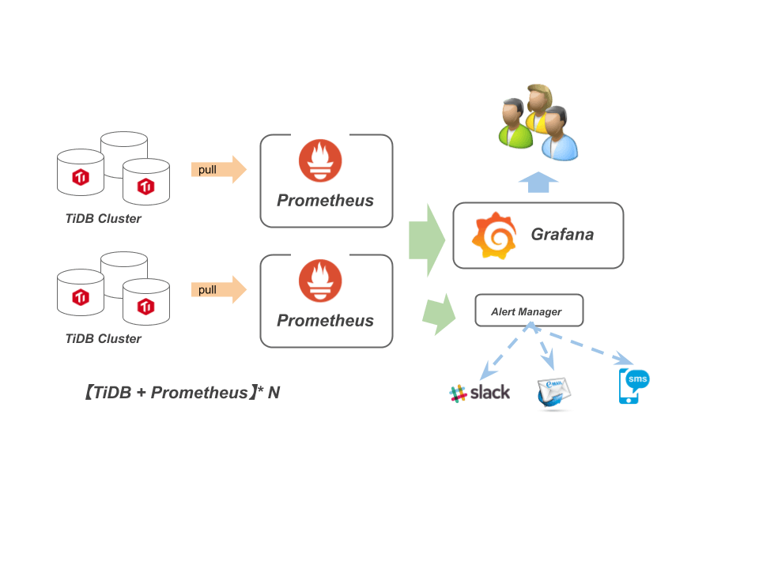

0x00 话不多说
Grafana 用于 TiDB-cluster 集群监控展示功能（如果不了解的同学可以看下以前的文档），如果每套集群都部署一个 Grafana，使用不方便且运维也繁琐。因此想通过单套 Grafana 管理多个 TiDB-cluster 集群。
辣么大概是以下结构：

0x01 想
通过 Google 一顿搜索发现其他人也有类似想法 I’ve got a new datasource I would like an existing dashboard to use.、Dashboard Level Datasource #2748 等、还在 Github 发现了一些 sqllite3 修改 grafana.db 的黑科技。
但是这些都不太适合懒人且还需要二次修改定制化，不方便随时随地操作。
抽着烟，试图在 Grafana docs 找到神迹……

偶然机会看见别人讨论 tidb-ansible 4.0 安装 grafana 删除 dashboard 的问题，挖掘 tidb-ansible & tidb-cluster 等代码后发现 Grafana 6.1 版本的新功能 Provisioning；用过 tidb-ansible 应该知道 tidb-ansible/scripts 下面有个 grafana-copy.py 脚本，该脚本通过 Grafana API 把 datasource & dashboard 导入进 Grafana 服务做初始化步骤。但是经常会报错出现问题……
0x02 动动
然后进入了测试阶段：
-
部署一个 Grafana 6.1 以上的版本
-
按照模板写 datasource
1
2
3
4
5
6
7
8
9
10
11
12
13
14
15
16
17
18
19
20
21
22
23
24
|
apiVersion: 1
deleteDatasources:
- name: cluster-1 # 此处传递的 tidb-ansible inventory.ini 文件中的 cluster-name
datasources:
- name: cluster-1 # datasource 名称，在配置文件中唯一
type: prometheus
access: proxy
url: http://10.10.10.4:14090
withCredentials: false
isDefault: false
tlsAuth: false
tlsAuthWithCACert: false
version: 1
editable: true
- name: cluster-2 # 这个是测试手写的
type: prometheus
access: proxy
url: http://10.10.10.4:14090
withCredentials: false
isDefault: false
tlsAuth: false
tlsAuthWithCACert: false
version: 1
editable: true
|
-
dashboard 配置文件
1
2
3
4
5
6
7
8
9
10
11
12
13
14
15
16
17
18
19
20
|
apiVersion: 1
providers:
- name: cluster-1
folder: cluster-1 # 在 Grafana 页面中显示
type: file
disableDeletion: false
editable: true
updateIntervalSeconds: 30
options:
path: /home/tmpuser/tidb-deploy/grafana-14409/cluster-1
- name: cluster-2
folder: cluster-2
type: file
disableDeletion: false
editable: true
updateIntervalSeconds: 30
# <bool> allow updating provisioned dashboards from the UI
allowUiUpdates: false # 该功能需要 6.7 以上版本支持
options:
path: /home/tmpuser/tidb-deploy/grafana-14409/cluster-2
|
-
Grafana 目录结构大致如下
- 运行目录 /home/user
- bin/grafana-server
- conf/grafana.ini
- provisioning/dashboards/dashboard.yml
- provisioning/datasources/datasource.yml
1
2
3
4
5
6
7
8
9
10
11
12
13
14
15
16
17
18
19
20
21
22
23
24
25
26
27
|
// bin/bin/grafana-server
├── bin
│ ├── bin
│ │ └── grafana-server # 运行程序
│ ├── node.json # dashboard 模版
│ ├── public
├── conf
│ ├── dashboard.yml # provisioning/dashboard 模版
│ ├── datasource.yml # provisioning/datasources 模版
│ └── grafana.ini
├── cluster-1 # 要导入集群 1 的 dashboard
│ ├── node.json
├── cluster-2 # 要导入集群 2 的 dashboard
│ └── node.json
├── data # Grafana sqllite3 数据库
│ ├── grafana.db
│ └── png
├── logs # 日志目录
│ ├── grafana.log
├── plugins
├── provisioning # 默认 provisioning 实际生效的地方
│ ├── dashboards
│ │ └── dashboard.yml
│ └── datasources
│ │ └── datasource.yml
└── scripts
└── run_grafana.sh
|
Run Grafana sh
Grafana 启动脚本，脚本中的 mkdir、cp、find + send 选配，非必选项。
1
2
3
4
5
6
7
8
9
10
11
12
13
14
15
16
17
18
19
20
21
22
|
# 新建 dashboard、provisioning 相关目录
mkdir -p /home/tmpuser/tidb-deploy/grafana-14409/plugins
mkdir -p /home/tmpuser/tidb-deploy/grafana-14409/dashboards
mkdir -p /home/tmpuser/tidb-deploy/grafana-14409/provisioning/dashboards
mkdir -p /home/tmpuser/tidb-deploy/grafana-14409/provisioning/datasources
# copy 模版文件到 provisioning 相关目录
cp /home/tmpuser/tidb-deploy/grafana-14409/bin/*.json /home/tmpuser/tidb-deploy/grafana-14409/dashboards/
cp /home/tmpuser/tidb-deploy/grafana-14409/conf/datasource.yml /home/tmpuser/tidb-deploy/grafana-14409/provisioning/datasources
cp /home/tmpuser/tidb-deploy/grafana-14409/conf/dashboard.yml /home/tmpuser/tidb-deploy/grafana-14409/provisioning/dashboards
# 批量修改 & 替换 json 模版文件中的关键词【方便在页面观赏】
find /home/tmpuser/tidb-deploy/grafana-14409/dashboards/ -type f -exec sed -i "s/\${DS_.*-CLUSTER}/cluster-1/g" {} \;
find /home/tmpuser/tidb-deploy/grafana-14409/dashboards/ -type f -exec sed -i "s/\${DS_LIGHTNING}/cluster-1/g" {} \;
find /home/tmpuser/tidb-deploy/grafana-14409/dashboards/ -type f -exec sed -i "s/test-cluster/cluster-1/g" {} \;
find /home/tmpuser/tidb-deploy/grafana-14409/dashboards/ -type f -exec sed -i "s/Test-Cluster/cluster-1/g" {} \;
# 启动命令
LANG=en_US.UTF-8 \
exec bin/bin/grafana-server \
--homepath="/home/tmpuser/tidb-deploy/grafana-14409/bin" \
--config="/home/tmpuser/tidb-deploy/grafana-14409/conf/grafana.ini"
|
Start log
1
2
3
4
5
6
7
8
9
10
11
12
13
14
15
16
17
18
19
20
21
22
23
24
25
26
27
28
29
30
31
32
33
34
35
36
37
38
39
40
41
42
43
44
|
lvl=info msg="Starting Grafana" logger=server version=6.1.6 commit=cf9cb45 branch=HEAD compiled=2019-04-29T21:29:28+0800
lvl=info msg="Config loaded from" logger=settings file=/home/tmpuser/tidb-deploy/grafana-14409/bin/conf/defaults.ini
lvl=info msg="Config loaded from" logger=settings file=/home/tmpuser/tidb-deploy/grafana-14409/conf/grafana.ini
lvl=info msg="Path Home" logger=settings path=/home/tmpuser/tidb-deploy/grafana-14409/bin
lvl=info msg="Path Data" logger=settings path=/home/tmpuser/tidb-deploy/grafana-14409/data
lvl=info msg="Path Logs" logger=settings path=/home/tmpuser/tidb-deploy/grafana-14409/logs
lvl=info msg="Path Plugins" logger=settings path=/home/tmpuser/tidb-deploy/grafana-14409/plugins
lvl=info msg="Path Provisioning" logger=settings path=/home/tmpuser/tidb-deploy/grafana-14409/provisioning
lvl=info msg="App mode production" logger=settings
lvl=info msg="Initializing HTTPServer" logger=server
lvl=info msg="Initializing SqlStore" logger=server
lvl=info msg="Connecting to DB" logger=sqlstore dbtype=sqlite3
lvl=info msg="Starting DB migration" logger=migrator
lvl=info msg="Initializing InternalMetricsService" logger=server
lvl=info msg="Initializing SearchService" logger=server
lvl=info msg="Initializing PluginManager" logger=server
lvl=info msg="Starting plugin search" logger=plugins
lvl=info msg="Initializing RenderingService" logger=server
lvl=info msg="Initializing AlertingService" logger=server
lvl=info msg="Initializing DatasourceCacheService" logger=server
lvl=info msg="Initializing HooksService" logger=server
lvl=info msg="Initializing LoginService" logger=server
lvl=info msg="Initializing QuotaService" logger=server
lvl=info msg="Initializing RemoteCache" logger=server
lvl=info msg="Initializing ServerLockService" logger=server
lvl=info msg="Initializing TracingService" logger=server
lvl=info msg="Initializing UsageStatsService" logger=server
lvl=info msg="Initializing UserAuthTokenService" logger=server
lvl=info msg="Initializing CleanUpService" logger=server
lvl=info msg="Initializing NotificationService" logger=server
lvl=info msg="Initializing ProvisioningService" logger=server
# 响应配置文件需求，每次启动的时候都会删除并重新注册 cluster-1
lvl=info msg="deleted datasource based on configuration" logger=provisioning.datasources name=cluster-1
lvl=info msg="inserting datasource from configuration " logger=provisioning.datasources name=cluster-1
# 注册 cluster-2 datasource 信息
lvl=info msg="inserting datasource from configuration " logger=provisioning.datasources name=cluster-2
# provisioning 支持三个功能：datasources、dashboard、alert notifiers，然而我这里没有配置告警信息；但是不影响启动
lvl=eror msg="Can't read alert notification provisioning files from directory" logger=provisioning.notifiers path=/home/tmpuser/tidb-deploy/grafana-14409/provisioning/notifiers error="open /home/tmpuser/tidb-deploy/grafana-14409/provisioning/notifiers: no such file or directory"
lvl=info msg="Initializing Stream Manager"
lvl=info msg="HTTP Server Listen" logger=http.server address=0.0.0.0:14409 protocol=http subUrl= socket=
|
0x04 下面没了
没了……
Author
Jeff
LastMod
2020-05-14
License
CC BY-NC-ND 4.0 ｜ 本文不带任何官方色彩，最终解释权归本站所有